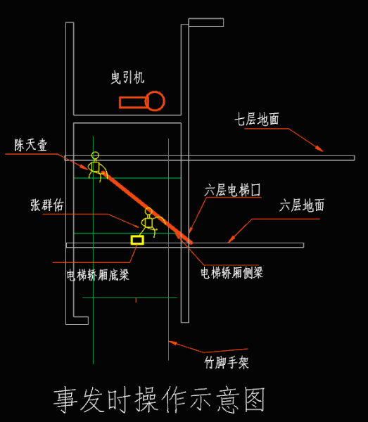
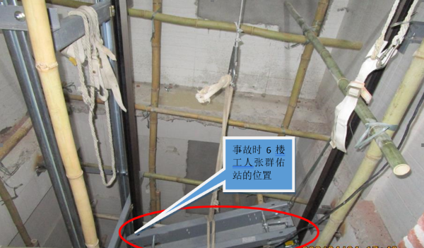
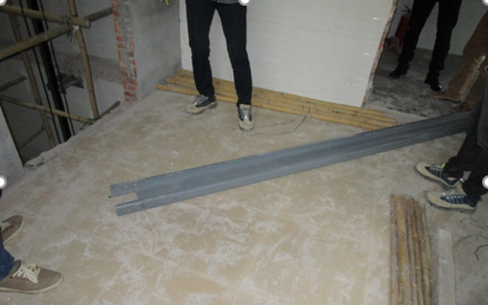

深圳某电梯安装工程“4·23” 高坠事故调查报告
2020年4月23日17时许，在马田街道石围社区石围新村西区197号楼在建电梯井中发生一起高坠事故，造成一人死亡。近日，深圳光明区人民政府公布了此起高坠事故调查报告。
一、事故基本情况
（一）事故工程情况
事故工程为光明区马田街道石围新村西区197号自建房电梯安装工程，麦润成委托其儿子麦旺兴于2020年3月21日与三水升达电梯公司签订《乘客电梯买卖安装合同》，购买了型号为SDKW800/1.5-JXVF的电梯一台并约定由三水升达电梯公司负责安装、运输、检测办证及一年免费维护保养，电梯安装工期为20个工作日。
（二）事故发生单位概况
深圳市三水升达电梯有限公司（以下简称“三水升达电梯公司”）,经济性质：有限责任公司，法定代表人：潘镜明，住所:深圳市龙岗区布吉街道百合星城百合酒店及住宅楼15C（办公住所）,统一社会信用代码：914403006785701387,经营范围：从事电梯及配件的购销；信息咨询。（乘客电梯、载货电梯、自动扶梯、自动人行道、杂物电梯的安装、维修、保养服务另行办理审批登记后方可经营），取得《中华人民共和国特种设备安装改造维修许可证》。
（三）事故人员基本情况
1、张群佑，死者，男，身份证住址：广西玉林市福绵区，系三水升达电梯公司员工。
2、麦润成，男，身份证住址：广东省深圳市宝安区，系石围新村西区197号自建房房东。
3、麦旺兴，男，身份证住址：广东省深圳市宝安区，系房东麦润成儿子，电梯安装合同由其与三水升达电梯公司签订。
4、潘镜明，男，身份证住址：广东省佛山市三水区，系三水升达电梯公司法定代表人及公司总经理。
5、陈天壹，男，身份证住址：广西玉林市玉州区，系三水升达电梯公司工人。
二、事故发生经过、应急救援及直接经济损失情况
（一）事故发生经过
2020年4月23日17时许，在光明区马田街道石围新村西区197号自建房，张群佑（死者）带领学徒陈天壹安装电梯轿厢侧梁（长约3.8米）过程中，不慎踩空从6层楼处电梯井内脚手架坠落至电梯井底坑，后其经抢救无效死亡。



经查：
1、2019年12月13日，麦润成在马田街道石围社区工作站完成了外墙翻新、室内装修开工登记备案，2020年3月31日在马田街道石围社区工作站完成电梯安装开工登记备案，深圳市市场监管局于2020年4月20日出具了深圳市特种设备施工告知（申报）回执，申报编号为20200417016091，业务类型为安装。
2、该工程于2020年4月15日进场开工，4月18日完成电梯井内脚手架搭设，4月20日完成电梯导轨安装，4月23日开始进行电梯轿厢的组装，正进行底梁、侧梁的吊运、安装。
3、死者张群佑没有高空作业证，作业时未佩戴任何劳动防护用品，其刚入职，还未与三水升达电梯公司签订劳动合同。
4、涉事脚手架高度约十九米，但是架体并未按要求在作业层铺设脚手板、未在作业层下方挂双层安全网兜封闭并每隔10米挂一层安全网兜。不满足《建筑施工安全检查标准》JGJ59-2011第3.3.4.3条作业层与建筑物间应进行封闭，架体作业层脚手板下应用安全平网双层兜底，以下每隔10m应用安全网封闭；第3.3.3.5条作业层要满铺脚手板，脚手板铺板要严密、牢靠的规定。
5、死者高处作业时未佩戴任何劳动防护用品，不满足《建筑施工高处作业安全技术规范》（JGJ80-2016）第3.0.5条高处作业人员应按规定正确佩戴和使用高处作业安全防护用品、用具，并应经专人检查的规定。
（二）事故救援情况
事故发生后，2020年4月23日17时20分现场人员将张群佑送至中国科学院大学深圳医院（西院区）抢救，张群佑于2020年4月24日13时4分抢救无效死亡。
（三）直接经济损失
三水升达电梯公司与张群佑家属达成协议，并签订《意外事故赔偿协议》，该起事故造成直接经济损失约为人民币100万元。
三、事故造成的人员伤亡情况
事故共造成1人死亡。死者张群佑，男，身份证住址：广西玉林市福绵区。
四、事故原因及性质
（一）直接原因
死者张群佑安全意识淡薄，在未佩戴任何劳动防护用品情况下，违规高处作业引发本次事故。
（二）间接原因
三水升达电梯公司及其主要负责人，未认真履行安全管理职责，对死者进行安全教育培训不到位,未监督、教育其佩戴劳动防护用品，未采取技术、管理措施及时发现和消除死者无证上岗的事故隐患。
（三）事故性质
调查组认为，本起事故是一起因公司及其主要负责人安全管理不到位，工人安全意识淡薄违规作业引发的一般生产安全责任事故。
五、事故责任认定及处理建议
（一）涉事单位的事故责任认定及处理建议
三水升达电梯公司，未认真履行安全管理职责，对死者进行安全教育培训不到位，未采取技术、管理措施及时发现和消除死者无证上岗的事故隐患,未监督、教育其佩戴劳动防护用品。其行为违反了《中华人民共和国安全生产法》第二十五条第一款、第三十八条第一款、第四十二条的规定,对本起事故的发生负有责任，建议由深圳市光明区应急管理局依据《中华人民共和国安全生产法》第一百零九条第（一）项的规定给予行政处罚。
（二）涉事人员的事故责任认定及处理建议
1、死者张群佑，安全意识淡薄，在未取得高空作业资格证，也未佩戴任何劳动防护用品情况下，在电梯井内6楼高处违规作业引发本次事故，对本起事故的发生负有直接责任。鉴于其在事故中死亡，建议免予追究其责任。
2、三水升达电梯公司主要负责人潘镜明，未认真履行安全管理职责，未督促、检查本单位施工现场的安全生产工作，未及时消除生产安全事故隐患。其行为违反了《中华人民共和国安全生产法》第十八条第（五）项的规定,建议由深圳市光明区应急管理局依据《中华人民共和国安全生产法》第九十二条第（一）项的规定给予行政处罚。
六、事故防范和整改措施
（一）三水升达电梯公司要深刻吸取本起事故的教训,严格落实企业安全生产主体责任,防止类似事故再次发生,并做到如下要求:
1、加强对施工作业现场的安全生产管理，采取技术、管理措施，及时发现并消除施工作业现场存在的事故隐患。
2、要严格审查作业人员作业资质，严禁公司从业人员无证作业，无证上岗。
3、严格教育和督促从业人员执行安全操作规程，监督、教育从业人员按照使用规则佩戴、使用劳动防护用品。
4、要与从业人员签订劳动合同，加强对员工的安全教育及管理，保证从业人员具备必要的安全生产知识。
5、公司主要负责人要履行安全管理职责，认真督促、检查本单位的安全生产工作，及时消除生产安全事故隐患。
（二）区住建部门要采取有效措施，加强对自建房电梯安装等建设方面的安全监管，出台相应的自建房安全生产监管政策，指导有关部门在辖区内进行自建房电梯安装等全面安全生产检查工作，消除隐患。
（三）市市场监管局光明监管局要加强行业监管力度，根据相关法律法规做好与区住建部门的衔接工作，确保监管不留死角，从源头防范和遏制此类安全事故的发生。
（四）马田街道办事处要深刻吸取本次事故教训，一是要切实履行属地安全生产监管职责，压实建设单位、施工单位安全责任，开展隐患排查整治；二是要持续加强巡查力度，严格执法，落实安全隐患整改，防范化解事故风险；三是要进一步明确街道各部门对自建房电梯安装的监管职责，完善安全监管措施，促使其安全生产监管规范化；四是要将这一案例作为警示教育题材，加大安全生产宣传教育力度，提高行业从业人员的安全意识，营造安全生产氛围，提高小散工程监管力度，加强监管力量，有效压降事故风险。
原文编辑: EHS资讯
原文链接: https://ehsinfo.cn/2020/07/19/电梯安装高坠事故调查报告.html
版权声明: 转载请注明出处(必须保留作者署名及链接)